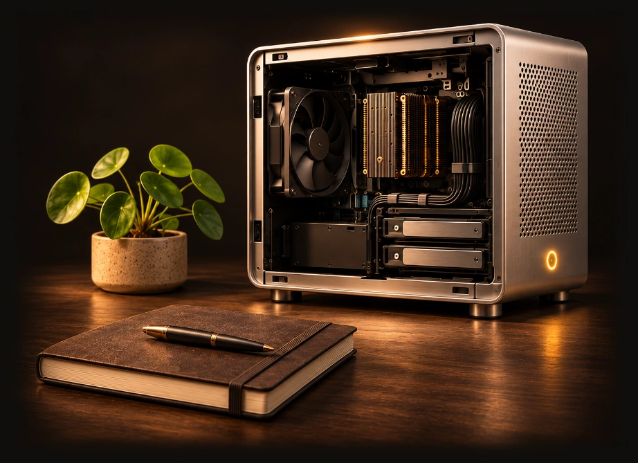

PlantBuddy
Für WGs und Büros haben wir im Modul WPR1 ein Konzept für die gemeinsame Pflanzenpflege erarbeitet. Im Team entstanden der Projektauftrag, die Systemziele und die Grobanforderungen.
Digital Business & AI an der BFH
Kundenbetreuer Business Software bei der Informaticon AG.
Projekte entdecken
Für WGs und Büros haben wir im Modul WPR1 ein Konzept für die gemeinsame Pflanzenpflege erarbeitet. Im Team entstanden der Projektauftrag, die Systemziele und die Grobanforderungen.
In meinem Homelab betreibe ich eigene Dienste und beschäftige mich mit Virtualisierung, Netzwerken und Datensicherung. Interne Anwendungen und öffentlich erreichbare Gameserver laufen in getrennten Netzbereichen.
Die Mod führt Spieler gemeinsam auf Expeditionen. Eine Herausforderung ist die Rückkehr: Jede Person soll nach der gemeinsamen Reise ihren eigenen Ausgangspunkt wieder erreichen.
Kalender, Aufgaben, Wetter und ÖV sollen auf einen Blick zeigen, was für den Tag ansteht. Das Tablet illustriert das Konzept mit Beispieldaten.
Mit jedem gültigen Schritt breitet sich das Wasser aus. Vor dem ersten Zug kannst du eine Barriere setzen. Sie schützt deinen Weg und kann dir zugleich den Ausgang versperren.
Erfahrung in der Betreuung von Kundinnen und Kunden und im Verkauf von Software.
Im Team Grobanforderungen für ein App-Konzept erarbeitet.
Praktische Erfahrung mit Proxmox und der Trennung von Netzbereichen im eigenen Homelab.
Dieses Portfolio ist mit HTML, CSS und JavaScript ohne Framework umgesetzt.
Vom kaufmännischen Alltag zur Business Software
Ich komme aus dem kaufmännischen Bereich. Heute betreue ich bei der Informaticon AG Kundinnen und Kunden, die mit unserer Business Software arbeiten.
Parallel dazu studiere ich Digital Business & AI an der Berner Fachhochschule. Bei PlantBuddy habe ich im Team erarbeitet, welche Anforderungen eine App für gemeinsame Pflanzenpflege erfüllen soll.
Zum Studienprojekt PlantBuddy